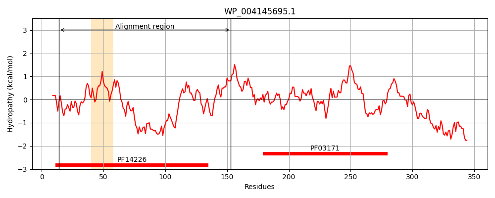
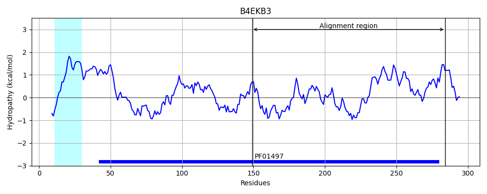
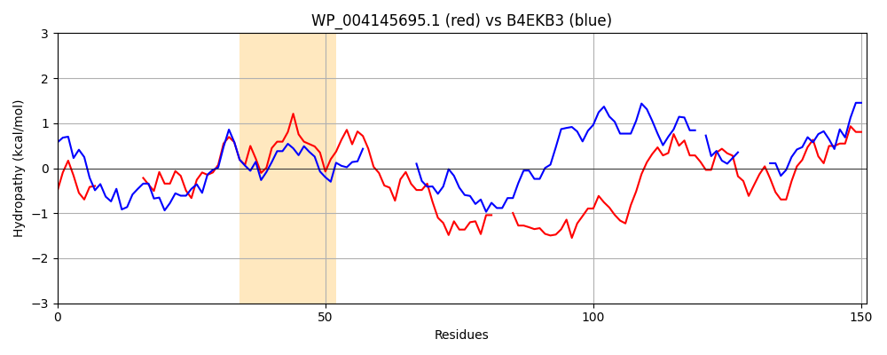

Hit Accession: B4EKB3
Hit TCID: 3.A.1.14.27
Hit Description: gnl|BL_ORD_ID|1870 gnl|TC-DB|B4EKB3|3.A.1.14.27 Putative hemin transport system, substrate-binding protein OS=Burkholderia cenocepacia (strain ATCC BAA-245 / DSM 16553 / LMG 16656 / NCTC 13227 / J2315 / CF5610) OX=216591 GN=hmuT PE=1 SV=1
Mach Len: 151
e:0.000185
Query TMS Count : 1
Hit TMS Count: 1
TMS-Overlap Score: 0.000000
Predicted Substrates:None
BLAST Alignment:
| Protein Hydropathy Plots: | |
|---|---|
|  |  |
Pairwise Alignment-Hydropathy Plot: | |
|  | |